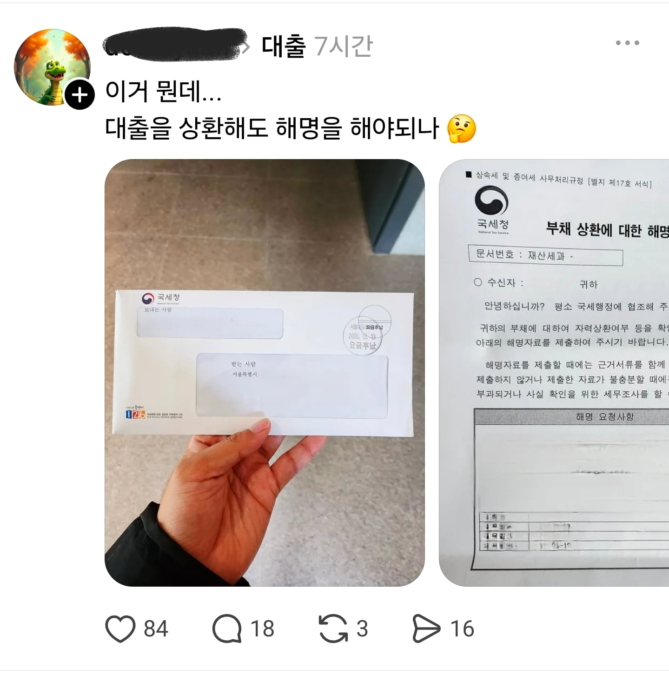
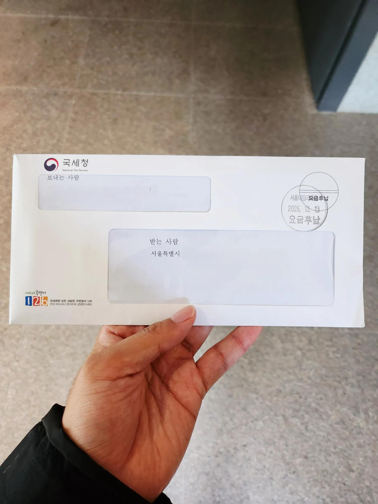
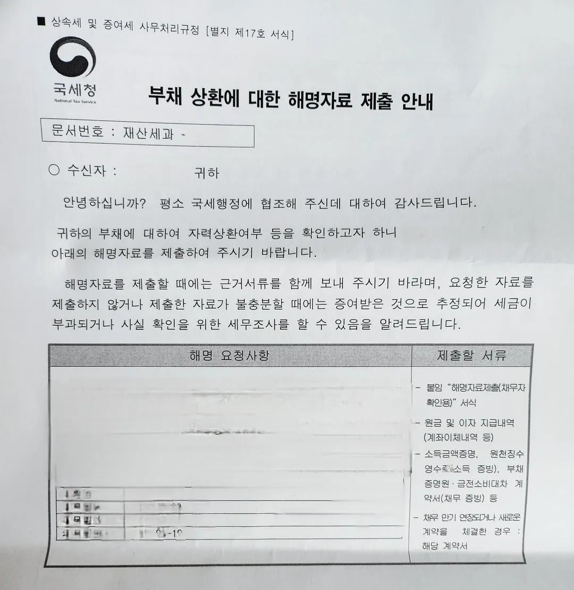

돈 갚은거 조사좀할께?



돈 갚은거 조사좀할께?
혹시 사학과야?
내가 이래서 vs 놀이로 큰돈 준다고해도 안받음 ㅇㅇ
돈 주 워 서 갚았다고 하면 넘어가주나?
증여 추정의 원칙 ㅋㅋㅋㅋㅋㅋㅋㅋㅋㅋ
어케했노 야발련아 해서 나오는거 아닌가
중학교때 친구 아부지가 10만원 용돈 보낸다는게 100만원으로 잘못보내서 90만원 걍 친구계좌로 보내니까 저거 날라오더라 ㅋㅋㅋㅋㅋ
90-100만원 정도는 안잡을텐데
근데 왔다는거임...
100만원으로도 온다고? 예전엔 그랬나..? 15년전 20대 중반때만해도 친구들끼리도 몇백씩은 주거니받거니 하고 가끔 천단위도 있었는데 아무문제 없었는데. 중딩이라서 그랬던건가?
내 생각에 수입없는 중딩이라 불법증여 이런걸로 잡은게 아닐까 싶긴한데
당시 중딩이었던 나도 어처구니가 없었음 ㅋㅋㅋ 중딩까지도 자금출처 증명해야한다고? 얘들 존나 할일없나?
미성년자도 증여 천만원까지는 괜찮은데 보냈나보네 ㅋㅋㅋ
온거 직접 눈으로 확인함?
내가 받고 친구한태 연락해서 통지서 찍어서 보내준 다음 친구아버지가 해결했음
그큰돈이 갑자기 어서생겼노 시발련아
빚쟁이 쉐끼가 돈이 어디서났는데 ㅋㅋㅋ
상식적으로 뭔가 의심스러우니까 보냈을듯
당연한거야 개붕이들아
내가 몇억빌린거 부모가대신 갚아주면 그게증여지
할건해야지
백수새끼가 돈 갚으니 저런게 오지 ㅋㅋㅋㅋㅋㅋㅋㅋㅋㅋㅋㅋ
이게 맞는듯 ㅋㅋ 직장인이라면 안날라왔을건데
원래 집사거나 빚갚으면 자금출처 소명 들어옴
조뺑이 쳤어요 하면 됨
저거 당연한건데,,
너희들이 그렇게 싫어하는 상속 증여 잡으려고 그런거잖아
소득 수준에 맞지 않게 상환이 너무 크면 날아옴.
할 일 존나 없네
국세청이 존나 일 잘하는거같은데...
국세청 존나바쁜조직중에 하나임
이재용 길에서 2조 주워 방지용
길거리에서 돈 주웠다고 세금 떼가는건 이해하면서 이건 이해 못하네.
아들이 10억 빌리고, 부모가 아들 대신 돈 갚아주면 아들은 그냥 10억이 생기는건데
세금 부과도 국가기능적 측면으로 보면 불이익 처분인건데
내가 제대로 냈다는걸 내가 증명해야 하다니
수사나 다른 행정기관 불이익처분하고 비교해보면 사람들이 별 말 없는게 신기함
그냥 익숙해져서 그런가봐
형법은 10명의 죄인을 놓치더라도 1명의 무고한 사람을 만들면 안된다는게 대원칙이라 그런듯. 기본적으로 정보의 비대칭문제때문에 소명은 정보를 더 가진쪽이 하는게 맞긴하니까
Vs 게임해서 받았어요
근데 현금을 바로 은행에 입금시키지는 않았을텐데 알아서 입금 플로우 조사하는건 불법인거임?
입금 플로우봤는데 이상하니까(소득 신고된 내역이 없으니까) 조사하는거 아니냐?
저건 뭐..
연소득 4천만원인 사람이 빚이 2억이 있고 집도 차도 모아둔돈도 없는상태에서
갑자기 3개월만에 2억을 갚았어요 뭐 이런식이면 조사할수도있는거지
어? 돈을 갚았네? 그 돈은 어디서 났지?
저거 가족이나 지인이랑 짜고 현금으로 빌려서 갚았다 하면 어케됨?
3자한테까지 조사 들어가나?
국세청이 조스로 보여...??? 빌려줬다는놈까지 싹 털지
니가 어떻게 대출을 상환해? 니가? 꼬롬한데? 알아서 해명자료 가져와라 이건가
금융실명제와 금융전산화로 현금들고 영수증 없이 쓰는거 제외하면 사실상 개인의 모든 금융과정을 합법적인 과정만 거치면 전부 조사할 수 있음.
전산상 수입이 없는데 큰 빚을 전산상으로 갚았다?
별도의 사업자등록도 없고, 재산도 없고, 세금 규모도 단기간에 빚을 갚을 정상적인 방법보다 크게 작다?
바로 "너 그 돈 어디서 벌었냐?"하는거임
그치 이건데
얼마를 상환했고 본인 소득이 얼만지도 올려놓고 뭐라해라. 국세청이 조사한다고하면 다 이유 있는거임
일 존나 열심히하는건데 왜 지랄이지
쌀먹했어요
욕할건 아니다
국세청이 지 일 하는건 당연한거라
국세청이 ㅈ같아 질려면 미국처럼 국세청 자체 군조직 보유해야함 ㅋㅋㅋㅋㅋㅋ
니 벌이가(소득신고) 없는데 부채가 상환되면 뭔돈이 어디서 났는지는 당연히 조사 대상이지.
이재용이 100조 빌려서 쓰다가 갑자기 일시상환 해버리면 국세청이 가만히 어이구 빚을 갚으셨구나 추카추카 할거같음?